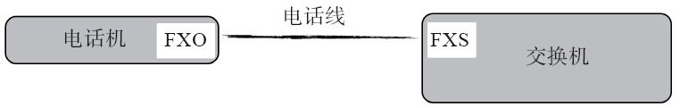
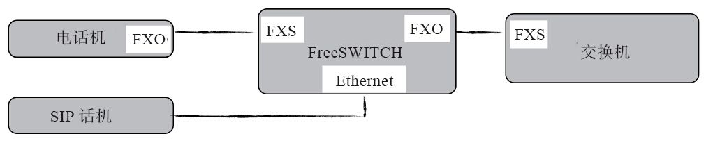
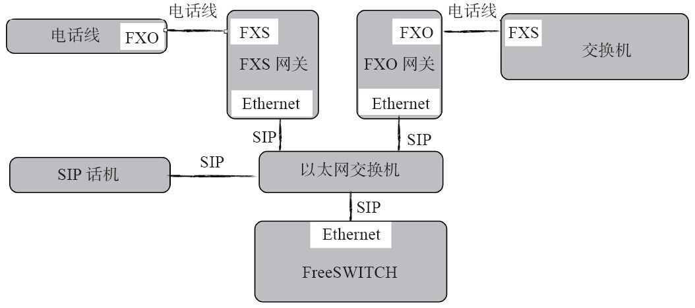
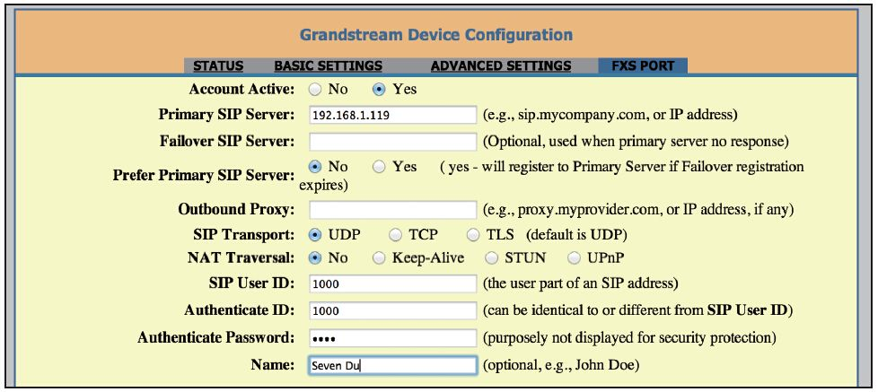
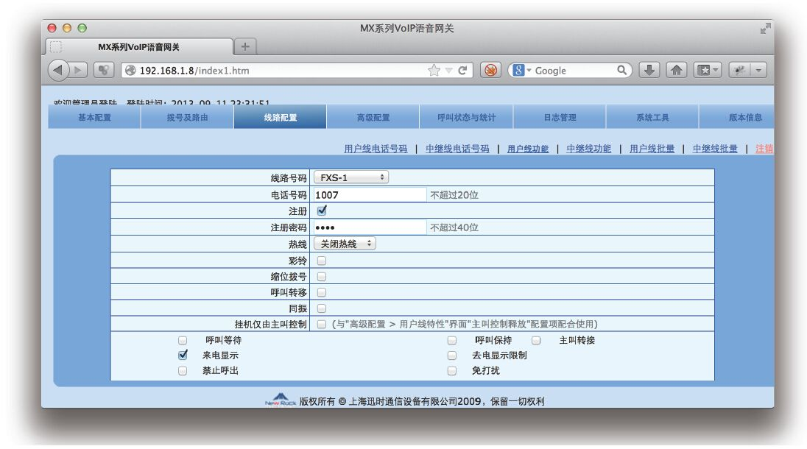
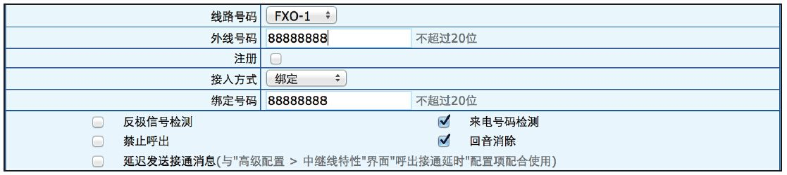

14.3 连接模拟话机和模拟中继线
在实际应用中，不可避免地要连接模拟话机。这里说的模拟电话机就是我们在家里或公司中常见的普通电话机。当然，在没有FreeSWITCH之前，我们的电话机就是通过一根普通模拟电话线连接出去的（具体连接到哪儿将在第14.3.1中讲到），并通过这条电话线往外打电话。
现在，我们有了FreeSWITCH，那我们就会想到两个问题：
·我们能不能把模拟话机也连接到FreeSWITCH上？这样模拟话机就可以与我们的SIP软电话（或硬电话）通话了。
·我们的FreeSWITCH能不能通过模拟电话线也往外打电话，甚至别人也可以通过与该电话线对应的号码呼叫我们？
答案是肯定的。下面，我们就来看一下这两个问题是怎么解决的。不过，在这之前，我们先来看一些与模拟电话相关的概念。
14.3.1 FXS和FXO
普通电话机是模拟的，通过一根模拟线连接到距离最近的电话交换机上。根据所处位置的不同，这个交换机可能是处在运营商机房的交换机，也可能是运营商设在用户小区的一个模块局中的交换机，还可能是本企业自己建设的用户小交换机。近几年，为响应国家光进铜退的号召，有些运营商就直接将光纤拉到用户家里，通过一个“小盒子”（因特网接入设备，称为IAD）将光纤接口转成普通的以太网口和模拟电话接口，然后再在模拟电话接口上接电话机。总之，我们的普通电话都要通过一根电话线连接到某个设备上。该设备提供一个模拟电话线的接入端口，在技术上，称为FXS口。同时，我们的电话机上也有一个模拟线的接口，称为FXO（在物理上，就是一个RJ11接口 [1] ）。FXS和FXO的连接方式如图14-2所示。

图14-2 FXS和FXO连接示意图
从常识来讲，我们知道，电话线是带电的，即使家里停电了也可以打电话，如果不小心摸到裸露的电话线也会有“触电的感觉”；而话机本身是不带电的，直接在话机上接上电话线并也不会感觉到有电 [2] 。由此我们可以联想到，FXS口是带电的，而FXO口是不带电的 。这也是两者的根本区别。
实际上，FXS提供的是–48V的直流电，主要是为了能感知话机摘挂机的变化、给话机提供拨号音、振铃及其他信号音等。在摘机状态下，电压将降至 [3] –7V，而在振铃状态下电压可能增大至–90V。也可以这样认为，FXS与FXO的区别是：前者能提供拨号音。
 注意
注意
在实际使用中一定不要将两个FXS口用电话线连接在一起，否则两者互相供电，后果是不堪设想的。
14.3.2 拓扑结构
有了上述基本概念以后，我们就可以来看一下要解决我们的问题需要的拓扑结构了。如图14-3所示，我们把图14-2中的电话线从中间截断，中间放上FreeSWITCH。FreeSWITCH提供一个FXO接口用于连接原来的交换机；另外提供一个FXS接口用于连接原来的模拟电话。此外，其他的SIP话机也可以通过以太网(Ethernet）口接进来，以实现互相通信。

图14-3 FreeSWITCH连接FXS及FXO的拓扑结构
FreeSWITCH本身是一个软件，因而它是不能提供FXO和FXS硬件接口的。要解决这一问题，有以下两种方案：
·在FreeSWITCH所在的服务器上安装相关的硬件板卡，该硬件板卡负责提供连接FXO及FXS的硬件接口。FreeSWITCH就可以通过相应的驱动程序去控制这些板卡。因而相当于给FreeSWITCH增加了FXO及FXS的接入能力。这类板卡中比较有代表性的有Sangoma及Diguim生产的模拟和数字板卡等。国内也有许多厂商生产所谓的“Asterisk兼容卡”，它们有的（如OpenVox）也能与FreeSWITCH搭配使用。
·通过外部网关 [4] 来实现。有些厂商针对这一问题专门生产了支持SIP到模拟线的转换网关，称为模拟网关。对于FreeSWITCH来讲，这种网关就是一个普通的SIP UA；而对于模拟话机来讲它就是一个电话交换机；对于电话交换机来讲，它就相当于一个普通模拟话机 [5] 。
至于如何在以上两种方案之间选择，没有标准的答案。如果有的话，也是具体问题具体分析 [6] 。不过，一般来说，笔者建议：对于模拟线路，选用第二种方案，因为这些网关设备很容易买到，而且坏了可以随时更换，兼容性也比较强；而第一种方案中支持这些板卡的驱动往往需要编译内核等，操作起来比较复杂。后面我们讲到用于数字线路的数字板卡时则可以考虑使用第一种方案，性价比和可控性会高一些。
增加了网关后的拓扑结构如图14-4所示。与图14-3比较起来，相当于在FreeSWITCH中把内置的板卡换成了外置的网关设备。

图14-4 FreeSWITCH通过网关连接模拟话机及电话线
在实际应用中，有单纯的FXS网关及FXO网关，端口数从1口、2口到几十口不等。也有的网关是FXS和FXO混合装在同一设备上的，根据实际需求可以选用不同的网关。
下面我们先来看一下模拟网关的配置和使用。
14.3.3 使用潮流网关连接模拟话机
我们先来看一下如何将话机通过模拟网关连接到FreeSWITCH上。潮流网络公司有一款型号为HT701的单口模拟网关，它有一个FXS口和一个以太网接口，FXS口用于连接话机，以太接口用于通过以太网连接FreeSWITCH。如果把它和与之相连的模拟话机看成一体的话，实际上就相当于一个SIP话机。也可以说，这款模拟网关能把普通的模拟话机“变”成SIP话机。该网关小巧方便，比较适合在桌面上使用。
该网关有一个简单的Web配置界面 [7] ，如图14-5所示。首先切换到“FXS PORT”配置界面，通过相关配置，可以令其向网关注册。在图中可以看到，它其实跟图3-13中亿联话机的账号配置界面是类似的（因为该网关的功能就相当于一个SIP话机）。其中，Primary SIP Server填入我们FreeSWITCH服务器的IP地址；Failover SIP Server是一个备份服务器，用于在Primary SIP服务器出现故障的时候自动倒换到Failover指定的服务器上，在这里我们不使用，可以不填；SIP User ID即我们注册的账号，在这里我们使用FreeSWITCH默认提供的账号1000；Authenticate ID为认证ID，跟账号一样；Authenticate Password即密码，填入1234，Name为SIP中的显示的名字，可以随便起一个；其他的都保留默认配置就可以了。

图14-5 HT701的配置
正确配置完上述选项后，就可以切换到“Status”页面查看注册状态了。如果注册正常，拿起相连的模拟话机的话筒就可以听到拨号音，然后就可以像正常的SIP话机一样打电话了。别人拨打SIP账号1000时，模拟话机也会振铃。
14.3.4 使用迅时网关连接模拟话机和模拟中继线
上海迅时的网关设备也是国内市场上常见的设备。在本节，我们以迅时MX8为例来讲解如何连接模块话机和中继线。MX8根据情况可以配置8个FXS口，也可以配置8个FXO接口，笔者使用的是一款配有4个FXS接口和4个FXO接口（简称4S4O）的网关。
1.配置FXS接口
MX8网关FXS接口的功能和配置跟我们上面讲到的潮流HT701差不多。首先，连接MX8的Web配置界面后，依次选择“基本配置”→“SIP”→“注册服务器和代理服务器”菜单项，在配置页面上选择注册方式为“按线路注册”，使用这种注册方式可以单独配置每个FXS接口对应的SIP账号，相当于4个独立的SIP话机。
配置好SIP服务器的地址后，再转到“线路配置”→“用户线功能”页面，如图14-6所示。在线路号码中选择一个FXS接口，如FXS-1；电话号码即我们的SIP注册账号，图所示的例子中我们使用1007，勾选“注册”复选框，然后在密码栏中输入“1234”，提交后，就可以成功注册到我们的SIP服务器上了。

图14-6 MX8网关FXS口的配置
如果有多个模拟话机，可以依次注册其他的。拿起话机听到拨号音，便可以像普通SIP电话一样对外呼叫。当然，模拨话机与SIP话机毕竟是不同的，这一点体现在拨号方式上尤为明显，要理解这一点需要了解我们下一节将要讲到的拨号规则。
2.拨号规则
在上一节我们讲到，SIP话机与普通模拟话机的拨号方式不同。在普通的模拟电话中，拨号时，按下的每一位号码都会实时传到后端的交换机上。因而在打电话时只需要拨完号码等着就行了，交换机在收齐相关号码后会自动帮我们接续。而SIP话机是比较“智能”的设备，它能在本地存储号码，在收齐所有号后需要用户按一个“发送”键才能将被叫号码送出去。这一点和模拟电话不同，故往往会很不适应——经常在拨完了号码后忘了按发送键，瞎等半天没有任何反应。不过，这一点倒是跟手机有些类似，手机也是在收齐了号码后需要按“发送”键才能拨出的。
这里我们还是讨论模拟话机。在用户摘机后，相连的交换机就开始向话机播放拨号音并启动收号程序。一般来说，电话号码是有规律的。比方说110，交换机知道它是一个短号码，收到三位110后就不会等待下面的拨号了，保证比较快速地接续。另外大家熟悉的手机号码也都是定长的，所以交换机在收齐足够的位数后就会快速接续。
现在，我们将模拟话机接到MX8网关上，因而该网关就需要具备收号功能。为了能保证快速地接续，它定义了一些拨号规则。如果所拨的号码匹配该拨号规则，就会将号码立即送出去（即向SIP服务器发送INVITE消息）。笔者使用的网关默认的拨号规则如下：
01[3,5,8]xxxxxxxxx
010xxxxxxxx
02xxxxxxxxx
0[3-9]xxxxxxxxxx
120
11[0,2-9]
111xx
123xx
95xxx
100xx
1[3,5,8]xxxxxxxxx
[2-3,5-7]xxxxxxx
…
（后面略）
可以看出，上述规则中第1行是匹配常见的手机号，第2行匹配北京的固定电话号码，其他的依此类推。我们在这里不介绍这些规则的具体含义，读者如果在使用时可以自行参考网关设备的参考手册。在这里需要注意的是，这些默认的拨号规则不一定适合你的需要。比如，如果你想拨打内网的一个分机号1200，由于在规则匹配时匹配到第5行的120就终止了，因而INVITE消息中的被叫号码就只是120，只要有这条规则存在，1200就永远也拨不出去 [8] 。
当然，如果你不理解这些的具体含义又一时找不到手册的话也不要紧，可以尝试把这些规则全删掉，而在拨号时拨完所有号码后在后面再加上一个“#”号，MX8网关收到“#”号后就会立即将前面收到的号码送出，而不包含最后的“#”号（当然，如果被叫号码中要求包含“#”号的情况下还是可能会有问题，那时候就真需要参考设备手册了）。
3.配置FXO接口连接外线
FXO接口可以连接运营商提供的电话线（我们称为外线）与外界通话。在MX8中，连接到FXO接口的电话线称为中继线（见2.1.2节中的模拟中继线部分）。切换到“线路配置”→“中继线功能”可以看到如图14-7所示的界面。在这里，在线路号码中选择一个端口，如FXO-1；外线号码填入运营商给我们分配的电话号码（实际上在这里可以是任意号码，它只是作为一个标志使用）；我们不像FXS那样使用注册方式向FreeSWITCH注册，而是使用“中继对接”方式与FreeSWITCH对接，因此我们不选注册复选框；接入方式选择“绑定”，并输入绑定号码（该绑定号码一般应该是运营商提供给我们的电话号码，但同样，也可以是做任意值，我们这里以88888888为例）。

图14-7 MX8网关FXO接口配置
通过使用绑定方式，我们可以在FXO接口有来话时自动路由到FreeSWITCH上（后面会讲到具体配置）。另外还可选择二次拨号的方式，我们先来讲一下二次拨号的方式。
注意，FXO接口的功能相当于一个电话机，如果有人拨打该外线对应的电话号码（为了简单起见，我们以88888888为例），它是无法知道我们在该外线上到底接了一个电话机还是模拟网关的。当然，如果我们直接在外线接了一个电话机，有人打电话时就会振铃，我们就可以接听了。但是这里我们接了一个模拟网关，如果有电话呼进来，模拟网关振铃的铃流电压后就可以代替我们接听。但接听后下一步该怎么办呢？一般来讲，它可以给用户再放一个拨号音（有的网关可以在这里设置一个比较简短的语音提示，称为IVR），这样主叫用户就可以再次通过DTMF按键进行拨号以拨打我们的内线号码。
当然，既然我们已经有了FreeSWITCH，就可以用FreeSWITCH做任何我们想做的事。所以这里我们选择绑定方式。在绑定号码88888888后，对于任何外线来话，该网关都会向FreeSWITCH发送INVITE消息（在设置了正确的路由的情况下），被叫号码为88888888。FreeSWITCH在收到后，就可以进入Dialplan，播放IVR，引导来电用户进行下一步的操作。在这种情况下，FreeSWITCH需要先对来电应答（发送SIP 200 OK消息），这样，网关收到200 OK消息后才应答进来的呼叫（相当于我们摘机），并建立通话。
当然，FreeSWITCH也可以自己直接将该来电桥接（bridge）到一个内线号码号码上，让该内线号码振铃。如果有多条外线，可以分别插在不同的FXO接口上，对内也可以一一对应不同的内线电话（分机）。当外面的人拨打这些外线号码时，电话就能从某一个FXO接口进来，并最终向对应的内线电话振铃。这种方式，就称为DID（Direct Inbound Dialing，对内直接呼叫）。同时这些外线号码就称为DID号码，简称DID。广义上讲，即使对这些外线来话不是一一对应到内线分机上的，也称为DID，在这种情况下，可以认为DID就是一个外线接入号，是一个被叫号码。
这里配置好了以后，我们还不足以建立它与FreeSWITCH通话。要灵活地对来话、去话进行处理，我们还要用到路由的概念。
4.配置路由
MX8网关通过路由机制对各种设备的来、去话进行控制。可以通过编辑路由表配置这些路由。路由表的语法也很简单。首先进入“拨号及路由”页面并添加如下的路由：
IP 1007 ROUTE FXS 1
FXO x ROUTE IP 192.168.1.9:5080
IP x ROUTE FXO 5,6,7,8
其中，第一行表示所有从IP来的呼叫，如果被叫号码是1007，则将该呼叫路由到FXS的第1个接口上；第二行表示，所有从FXO接口来的呼叫，不管被叫号码是什么，统一路由到一个IP地址上，后面就是我们FreeSWITCH服务器的地址192.168.1.9，并且我们在这里使用5080端口，以避免对网关发来的INVITE请求进行鉴权（参考9.2.2节）。
下面，我们分几种情况进行说明。
1）模拟话机做主叫。当它发起呼叫时，由于我们在这里使用了向FreeSWITCH注册的方式，因而相当于网关设备把它转换成了一个SIP话机，网关设备就会向FreeSWITCH发起INVITE请求，接下来的接续流程跟SIP话机做主叫是一样的，呼叫进入FreeSWITCH的Dialplan，然后进行下一步的路由。
2）模拟话机做被叫。如果在FreeSWITCH中有人呼叫该模拟话机的号码（如1007），FreeSWITCH只是认为它就是一个普通的SIP用户，因而会找到网关设备注册时的Contact地址（即网关的IP），并向该网关发INVITE请求。网关收到INVITE请求后，查找路由表，并匹配到上述路由表中的第一行，因而连接在相关的FXS口的模拟话机就会振铃。
3）接受模拟外线呼入。如果外面的电话从外线呼入，来话就到达网关的FXO接口。网关从上述路由表中查到第2行所示的路由，并向192.168.1.9:5080发送INVITE请求。FreeSWITCH在收到INVITE请求后，会进入路由阶段，我们在日志中就可以看到类似如下的输出（还记得我们在6.1.1节讲到过的“绿色的行”吗？）：
Processing 139xxxxxxxx <139xxxxxxxx>->88888888 in context public
注意，其中的88888888就是我们设置的DID。因此，为了能处理该通话，我们需要在public Dialplan中添加类似如下的配置：
<extension name="DID">
<condition field="destination_number" expression="^88888888$">
<action application="info" data=""/>
<action application="ivr" data="welcome"/>
</condition>
</extension>
上述配置可以在日志中显示来话Channel的相关信息，并执行IVR，提示来电用户进行下一步操作。
4）通过模拟外线呼出。如果需要通过模拟外线呼出，则需要首先在FreeSWITCH中做一条路由，将去话路由到该网关上。在这种情况下，FreeSWITCH将MX8网关看成一个外部网关，因而我们可以在FreeSWITCH中添加一个网关（其中192.168.1.8为MX8网关的IP地址）：
<gateway name="mx8">
<param name="realm" value="192.168.1.8"/>
<param name="register" value="false"/>
</gateway>
其中，FreeSWITCH仅把MX8网关看作一个以中继方式对接的设备，因而不需要向其注册（register=false）。
然后，就可以使用如下的Dialplan将本地用户的去话路由出去。
<extension name="DID">
<condition field="destination_number" expression="^0(.*)$">
<action application="bridge" data="sofia/gateway/mx8/$1"/>
</condition>
</extension>
另外，在这种中继对接的模式下，我们也可以不在FreeSWITCH中添加网关，而是直接把去话送到网关的IP地址上，如：
<extension name="DID">
<condition field="destination_number" expression="^0(.*)$">
<action application="bridge" data="sofia/external/$1@192.168.1.8"/>
</condition>
</extension>
通过上面的Dialplan可以将FreeSWITCH中的电话送到MX8上，然后MX8收到请求后查找到以下的路由表项：
IP x ROUTE FXO 5,6,7,8
该路由表表示，从IP（以太网口）进来的呼叫，不管被叫号码是什么（x代表任意号码），全部路由到FXO接口上，FXO接口的选择顺序依次是5、6、7、8。
注意
笔者使用的MX8有4个FXS口和4个FXO接口，FXO接口的范围是5～8。在呼出时，如果检测到某个接口忙，则顺序会选择下一个接口进行呼出。
5.其他
对于网关来讲，还有其他的一些常用功能，比较典型的如主叫号码检测。对于一个从外线（FXO接口）进来的来话而言，如果我们在外线上开通了来电显示功能，则可以在向SIP服务器发送INVITE之前检测主叫号码。
一般来说，现行的模拟线路都使用FSK [9] 方式来传送主叫号码。主叫号码在第一声振铃和第二声振铃的时间隔内传送。所以，如果使用主叫号码检测，接续时间就会长一点。从图14-7中可以看出我们勾选了“来电号码检测”功能。
开启了来电号码检测后，如果外线没有开通来电显示功能（通常该功能作为运营商的增值业务，是要单独收费和开通的），则肯定检测不到主叫号码。MX8网关在这时通常使用我们“绑定”的号码作为SIP侧的主叫号码。
另一个值得一提和功能是“回声消除”。回声一般是在话机等终端设备上产生的，典型的场景就是从话筒中传出的声音又传回到了麦克风里去了（相当于声音反射，称为回声），这样对端就会在电话中听到自己的声音，听起来会感觉不舒服 [10] 。如果设备有较好的回声消除功能，它可以检测麦克风的输入，如果里面包含话筒中刚刚输出过的内容（它应该能记住一段时间的内容），则自动在传到对方之间将这部分声音数据去掉。这种技术就称为回声消除。
在图14-6中我们也勾选了“回声消除”功能，它在检测到回声时能起到一定的作用。另外，一幅比较好的耳机也能大大减少回声（声音的输出直接传的耳朵里，很少会扩散到麦克风中）。
在本节我们以迅时MX8网关为例子讲解了模拟网关的配置以及与FreeSWITCH的对接。其他厂商的网关也有类似的功能，只是具体的配置和实现方式不同。具体的应用可以参考相应的设备手册。
[1] RJ11接口最多支持4根线，不过模块电话只需要用到其中的2根。常见的以太网接口为RJ45接口，有8根线，不过一般只是用到其中的4根。
[2] 有些话机需要安装电池或接变压器电源，这些电源主要是为了支持话机的本地显示屏等功能用的，如支持“来电显示”等。远程交换机上的馈电的功率不足以支持这些功能。
[3] 在通信设备中一般使用负电压。注意，这里说的是电压的绝对值，虽然–48在数学上小于–7，但对于电压的绝对值来说，从48到7是下降了。
[4] 一般来说，处于设备的中间，用于连接两个不同网络或不同协议的的设备都称为网关设备。根据网关支持的不同的接口或协议类型以及应用场景又分为多种类型，如模拟网关，E1数字中继网关等。我们在这里主要讨论SIP网关，因此一般来说网关一端的协议是SIP的。当然，对于完成同样功能的设备有时也有不同的叫法，如某些型号的路由器设备就支持模拟电话接口，因而也具有网关的功能。另外，有些设备（华为公司生产的终端设备）又称IAD（Internet Access Device，因特网接入设备），也能完成模拟网关的功能，并可能还支持其他的协议。
[5] 也就是说，带有FSX口的设备就相当于一个电话交换机，带有FXO口的设备就相当于一个普通模拟话机。
[6] 常见的答案是It Depends，即应该根据具体的使用场景来选择。
[7] 其实使用这类Web界面最大的一个问题往往是如何先找到该设备的IP地址。不同厂家的设备都有不同的默认地址或者查找IP地址的方法，在使用时请参考相关设备说明书或相关资料，在此我们就不多介绍了。下同。
[8] 通常的解决办法是去掉该行规则，如果拨打真正的外网的120时拨0120并通过相关的号码变换规则实现。
[9] Frenquency-shift keying，即移频键控。参见http://en.wikipedia.org/wiki/Frequency-shift_keying。
[10] 产生回声的原因是对端终端的问题，即如果你能听到回声，那一定是对端的终端设备将你的声音又反射了回来。